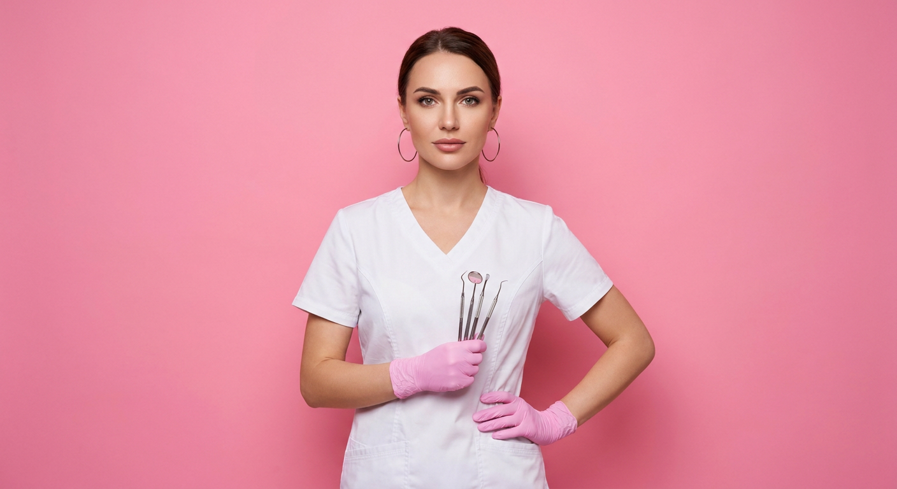
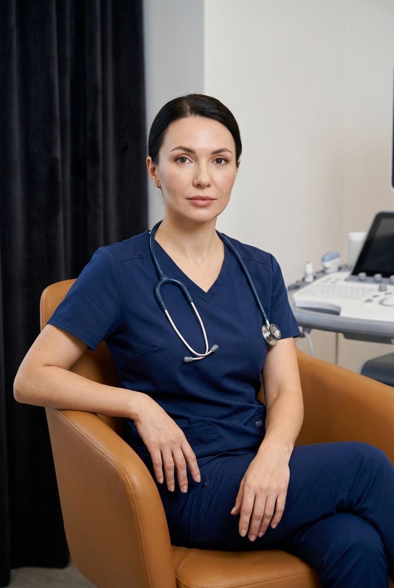
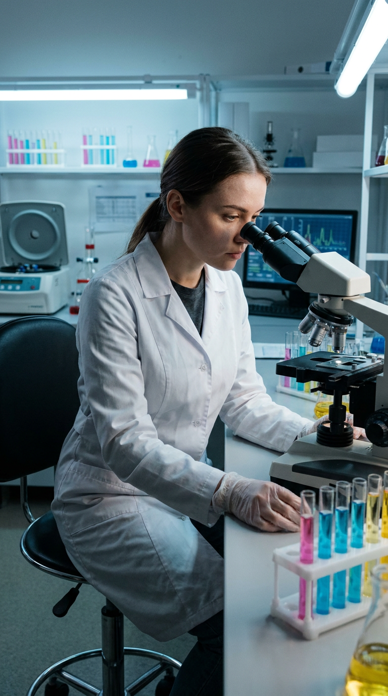
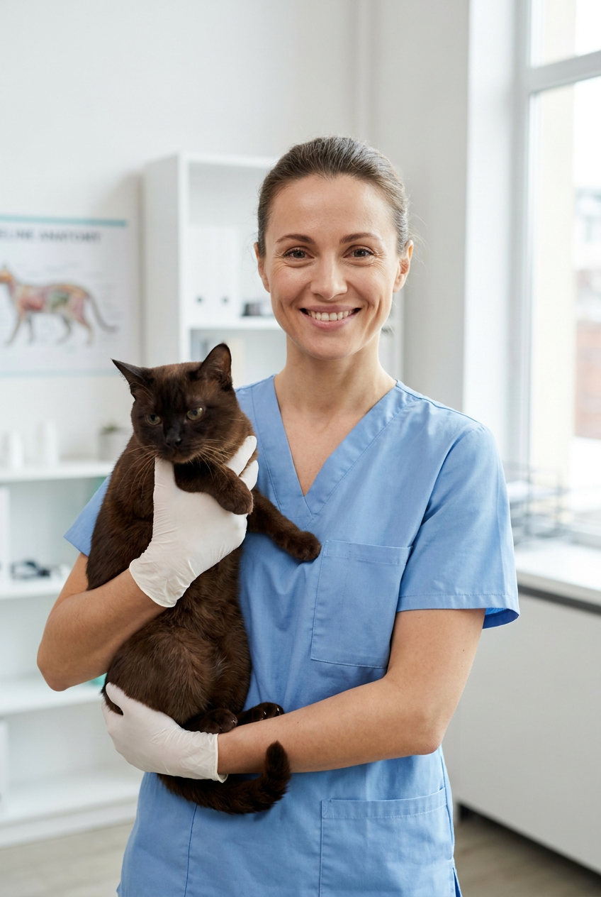
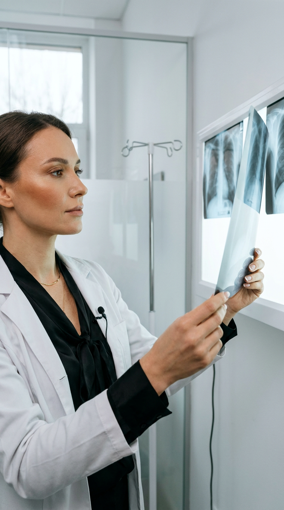
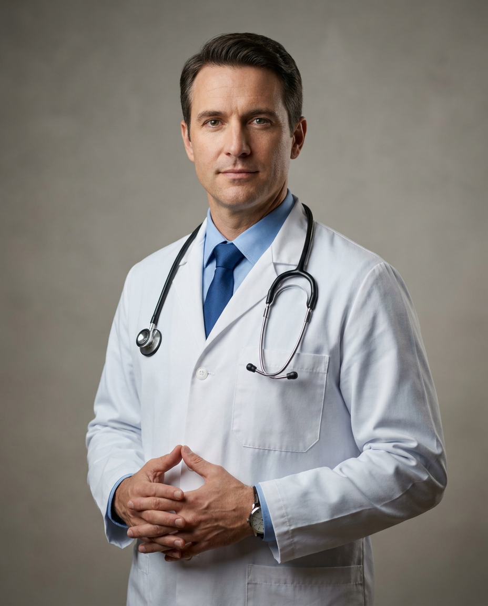
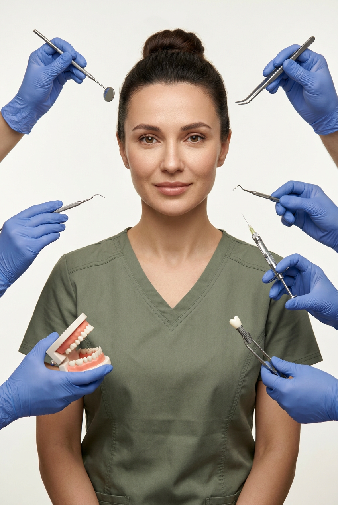
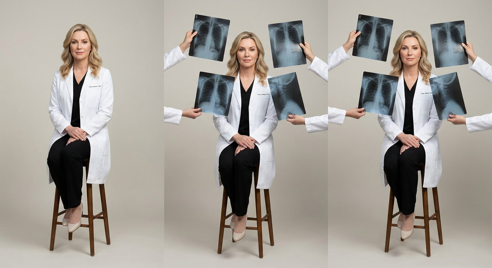
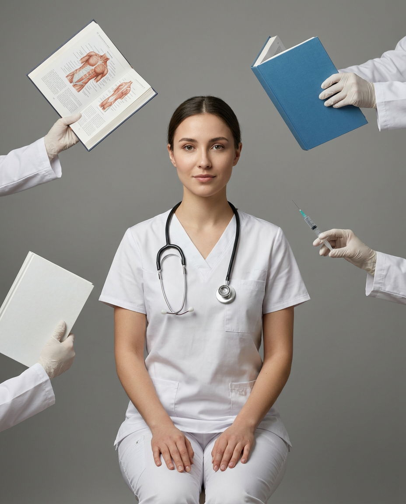

ИИ-фото врача: 10 промптов для нейросети

Обычный снимок для сайта клиники или соцсетей часто выглядит слишком формально, а профессиональная фотосессия требует времени и бюджета. Генерация помогает быстро собрать образ врача с нужной одеждой, позой, интерьером и настроением.
В подборке — 10 сценариев для стоматолога, рентгенолога, ветеринара, лаборанта и врача общей практики. Здесь есть строгие студийные портреты, кадры в кабинете, лабораторная сцена, сюрреалистичная editorial-композиция и вертикальные варианты 9:16.
Как сгенерировать такое фото: пошагово
Нужен снимок анфас при ровном свете, лицо в кадре целиком, без тёмных очков и головных уборов. Разрешение от 1000 пикселей по короткой стороне. Чем чётче исходник, тем точнее модель повторит черты.
Выберите сценарий ниже и нажмите «Копировать» — текст уйдёт в буфер целиком, вместе с командой сохранения внешности. Эта команда стоит первой строкой и отвечает за то, чтобы на выходе было ваше лицо, а не случайное.
Кнопка «Сгенерировать» рядом с каждым промптом открывает модель в новой вкладке. Nano Banana Pro работает с референсом лица — в отличие от моделей, которые генерируют портрет с нуля и узнаваемость теряют.
Промпт — в поле ввода, портрет — через загрузку референса. Порядок значения не имеет, но без референса команда сохранения внешности работать не будет: модели нечего сохранять.
Для сторис и ленты берите 9:16, для превью и обложек — 4:3. Первый результат редко идеален: если поза или свет ушли не туда, поправьте соответствующую часть промпта и запустите заново. Обычно хватает двух-трёх итераций.
10 промптов для генерации
1. Стоматолог на розовом фоне
Строго сохранить внешность по загруженному референсу: черты лица, пропорции, мимику и текстуру кожи без изменений. Фотореалистичный рекламный портрет женщины-стоматолога в студии. Она стоит строго по центру и смотрит прямо в объектив; поза собранная, уверенная, слегка строгая, но без напряжения. За спиной — ровная ярко-розовая стена без фактуры и деталей. На героине чистая белая медицинская форма с лаконичным V-образным вырезом, мягкой посадкой и естественными складками дорогой гладкой ткани. На руках аккуратные розовые латексные или нитриловые перчатки. В одной руке — стоматологический инструмент, поднятый так, чтобы он был заметен в кадре. Мягкий студийный свет, точная передача оттенков, натуральная кожа, реалистичная ткань, профессиональная эстетика рекламы современной стоматологической клиники, вертикальная композиция, высокая детализация.
2. Врач в дизайнерском кресле

Строго сохранить внешность по загруженному референсу: черты лица, пропорции, мимику и текстуру кожи без изменений. Реалистичная editorial-фотография женщины-врача в современном медицинском интерьере. Она сидит в дизайнерском кресле, корпус немного развёрнут к камере, одна рука спокойно лежит на подлокотнике, вторая — на колене или свободно опущена. Одна нога мягко перекрещена поверх другой. Взгляд направлен в объектив либо чуть в сторону, выражение спокойное, дружелюбное и профессиональное. На ней тёмно-синий медицинский костюм с аккуратным V-образным вырезом, чистой фактурой и реалистичными складками. На груди расположен стетоскоп. Интерьер дорогой, современный, но ненавязчивый: нейтральные медицинские детали, чистые поверхности, мягкий рассеянный свет. Фотореализм, натуральная текстура кожи, аккуратная глубина резкости, рекламная съёмка, вертикальный кадр.
3. Лаборантка у микроскопа

Строго сохранить внешность по загруженному референсу: черты лица, пропорции, мимику и текстуру кожи без изменений. Вертикальный кинематографичный портрет 9:16: девушка-лаборант сидит на высоком лабораторном стуле и слегка наклоняется к микроскопу. Левая рука лежит на винте фокусировки, правая касается пробирки, взгляд сосредоточен в окуляре. Макияж почти незаметный — только тушь и тональный крем. На ней белый халат с длинными рукавами, застёгнутый на все пуговицы, под ним тёмно-серая футболка с круглым вырезом. Руки защищены прозрачными нитриловыми перчатками. На заднем плане видны штативы с пробирками, наполненными розовой, голубой и жёлтой жидкостью, центрифуга, химические колбы и компьютер с графиками. Холодный флуоресцентный свет падает сверху и сбоку, оставляя чёткие тени от пробирок. Высокая детализация, реалистичная лабораторная атмосфера.
4. Ветеринар с котом

Строго сохранить внешность по загруженному референсу: черты лица, пропорции, мимику и текстуру кожи без изменений. Фотореалистичный портрет женщины-ветеринара в светлом современном кабинете ветеринарной клиники. Она стоит прямо, смотрит в камеру и мягко улыбается; выражение открытое, тёплое и заботливое, но профессиональное. В руках врач бережно держит спокойного ухоженного кота тёмно-коричневого, чёрного или шоколадного оттенка. Животное выглядит здоровым, расслабленным и безопасно поддержанным. На героине светло-голубой scrubs-костюм с V-образным вырезом, удобной посадкой и натуральными складками практичной ткани. На руках белые или светло-голубые медицинские перчатки. Кабинет залит мягким светом, фон чистый и светлый, без визуального шума. Реалистичные пропорции человека и животного, естественная кожа, детальная фактура формы, рекламный стиль клиники.
5. Рентгенолог у светового планшета

Строго сохранить внешность по загруженному референсу: черты лица, пропорции, мимику и текстуру кожи без изменений. Вертикальный кинематографичный кадр 9:16 с девушкой-рентгенологом в кабинете диагностики. Она стоит вполоборота и поднимает рентгеновский снимок к белому световому планшету, внимательно рассматривая его. На лице спокойная сосредоточенность. Макияж натуральный, с тёплым румянцем на скулах и коричневой тушью. Белый халат прямого кроя расстёгнут, под ним чёрная шёлковая блуза с бантом. На шее тонкая золотая цепочка с небольшим микрофоном для голосовых заметок. Перчаток нет, маникюр аккуратный, бежевый френч. За спиной — световой планшет с несколькими снимками грудной клетки, стеклянная перегородка и хромированная стойка с капельницей. Основной свет мягко падает из окна, холодное свечение планшета подсвечивает лицо снизу. Минималистичная медицинская эстетика.
6. Врач рядом с рентгеном
Строго сохранить внешность по загруженному референсу: черты лица, пропорции, мимику и текстуру кожи без изменений. Вертикальный фотореалистичный портрет молодой женщины-врача в больничном кабинете, формат 4:5. Она стоит рядом с большим рентгеновским снимком, который заметен слева в кадре. Корпус слегка повёрнут, руки скрещены, голова немного наклонена, взгляд направлен вверх и в сторону, на лице широкая искренняя улыбка. На ней светло-голубая медицинская форма и бордовый стетоскоп на шее. Макияж естественный, кожа ухоженная, пропорции тела и лица реалистичные. Фон светлый, чистый, медицинский, без лишних предметов. Используй мягкий рассеянный свет, малую глубину резкости, объектив 85 мм, натуральную текстуру кожи, детализированную ткань и профессиональную портретную подачу. Избегай размытия, пластиковой кожи, искажённого лица, лишних пальцев и рук, деформированных кистей, кривых плеч и ошибок анатомии.
7. Классический мужской портрет

Строго сохранить внешность по загруженному референсу: черты лица, пропорции, мимику и текстуру кожи без изменений. Студийный фотореалистичный портрет мужчины-врача с уверенным спокойным взглядом прямо в объектив. Он стоит с прямой осанкой, корпус немного развёрнут, руки сложены перед собой на уровне живота, пальцы спокойно соединены. На нём белый медицинский халат, голубая рубашка и синий галстук; на шее висит чёрный стетоскоп, на запястье видны часы. Фон нейтральный серо-бежевый, мягко размытый, без мебели и случайных деталей. Свет мягкий боковой, с естественными тенями на лице и одежде. Передай фактуру кожи, ткани и металлических деталей без эффекта пластика. Профессиональная чистая медицинская эстетика, shallow depth of field, объектив 85 мм, вертикальный формат 4:5, высокая детализация. Исключи низкое качество, лишние пальцы, дополнительные руки, деформированные кисти, неправильную анатомию, кривые плечи и чрезмерно длинные конечности.
8. Стоматолог в зелёной форме

Строго сохранить внешность по загруженному референсу: черты лица, пропорции, мимику и текстуру кожи без изменений. Дорогой фотореалистичный editorial-портрет женщины-стоматолога в центре светлой студии. Она может стоять или сидеть, корпус выпрямлен, поза спокойная и уверенная, без напряжения. Взгляд направлен прямо в камеру, выражение мягкое, собранное, умное и немного дружелюбное. На героине медицинский костюм спокойного зелёного, серо-зелёного или приглушённого оливкового оттенка. Форма имеет аккуратный V-образный вырез, свободную, но элегантную посадку; матовая гладкая ткань выглядит качественно и показывает естественные складки. Волосы аккуратно собраны назад или уложены так, чтобы лицо оставалось открытым. Фон чистый, светлый, нейтральный, без лишних предметов. Мягкий студийный свет, реалистичная кожа, спокойная цветокоррекция, профессиональная съёмка для презентации современной клиники.
9. Рентгенолог среди снимков

Строго сохранить внешность по загруженному референсу: черты лица, пропорции, мимику и текстуру кожи без изменений. Фотореалистичная студийная фотография медицинского специалиста, работающего рентгенологом. Человек сидит на высоком табурете в расслабленной уверенной позе: одна нога согнута, другая вытянута, руки аккуратно собраны перед собой или лежат на ногах. На нём белый медицинский халат, чёрная одежда под ним, светлая обувь, аккуратный макияж и мягкая укладка волос. Вокруг героя выстроены несколько рентгеновских снимков; их держат руки людей в белых халатах, создавая графичную композицию медицинской фотосессии. Фон ровный, светлый, бежево-серый, минималистичный. Используй мягкий рассеянный студийный свет, естественные тени, чистую цветокоррекцию и спокойную атмосферу. Стиль — современный editorial, реалистичная кожа и ткань, точные пропорции, вертикальный кадр.
10. Врач в сюрреалистичной композиции

Строго сохранить внешность по загруженному референсу: черты лица, пропорции, мимику и текстуру кожи без изменений. Вертикальный студийный портрет 4:5: молодой врач сидит в центре кадра на нейтральном сером фоне и спокойно смотрит прямо в объектив. На нём белый медицинский костюм, на шее стетоскоп; поза естественная, без театрального напряжения, кожа выглядит живой и реалистичной. Вокруг героя разворачивается сюрреалистичная медицинская композиция: несколько рук в белых халатах держат открытый анатомический атлас, синюю медицинскую книгу и ещё одну белую книгу. Рядом парит шприц, книги и другие предметы словно зависли в воздухе. Подача напоминает fashion-editorial, но сохраняет профессиональную медицинскую тему. Мягкий рассеянный свет, натуральные цвета, реалистичные тени, высокая детализация, чёткие черты, текстура кожи, объектив 85 мм и малая глубина резкости. Исключи размытие, лишние пальцы, кривые кисти и неестественные предметы.
Что важно учесть в этом стиле
Медицинский портрет держится на трёх вещах: узнаваемом лице, понятной профессии и аккуратной анатомии. Чем больше предметов попадает в кадр, тем выше риск ошибок в пальцах, стетоскопе, инструментах и рентгеновских снимках. Для первого результата лучше выбрать одну ключевую деталь: микроскоп, планшет, кота или книгу.
Для реалистичной кожи задавайте мягкий свет, натуральную текстуру и объектив 85 мм. Если нужен формат для сторис или клипа, сразу указывайте 9:16. Для карточки специалиста подойдёт вертикаль 4:5, а для сайта — портрет с запасом свободного фона под текст.
Идеи для вариаций
- Замените цвет медицинской формы на графитовый, мятный или пудрово-голубой.
- Перенесите врача из студии в кабинет с окном, стойкой с инструментами или экраном диагностики.
- Сделайте серию в едином стиле: одинаковый фон, свет и кадрирование для всей команды клиники.
- Добавьте бейдж с должностью, но задайте короткую надпись крупными буквами.
- Попросите два варианта эмоции: нейтральный профессиональный взгляд и лёгкую естественную улыбку.
Как собрать свой промпт
Сначала укажите тип кадра и формат: студийный портрет, вертикаль 4:5 или 9:16. Затем опишите героя, одежду, позу и главный медицинский предмет. После этого задайте фон, направление света, настроение и технические параметры — например, объектив 85 мм, мягкий боковой свет и малую глубину резкости.
Не смешивайте слишком много действий в одном запросе. Для сложной сцены сначала добейтесь правильной позы и лица, а затем добавляйте книги, снимки или инструменты. В конце добавьте ограничения: без лишних пальцев, дополнительных рук, пластиковой кожи, кривых плеч и текста с ошибками. Обычно полезно сделать 4–8 вариантов, выбрать лучший и доработать только проблемные детали.
Ошибки, из-за которых кадр не получается
- Слишком много объектов. Микроскоп, книги, снимки и инструменты одновременно перегружают сцену и провоцируют артефакты.
- Нет формата кадра. Без указания 9:16 или 4:5 композиция может не подойти для нужной площадки.
- Противоречивая поза. Фразы «руки свободно опущены» и «пальцы соединены перед собой» лучше не использовать вместе.
- Слабое описание света. Без источника и направления освещения лицо часто получается плоским или чрезмерно глянцевым.
- Текст на предметах. Нейросеть часто искажает надписи на бейджах, книгах и медицинских экранах — их лучше добавить на этапе ретуши.
Частые вопросы
Как сделать такое ИИ-фото бесплатно?
Для первых попыток подойдут Kandinsky и «Шедеврум»: у них можно генерировать изображения без оплаты, но число попыток, скорость и поддержка референса зависят от текущих условий. Krea AI и Arena.ai удобны для экспериментов и сравнения результатов, однако функции работы с исходным лицом могут быть ограничены, а бесплатный доступ — иметь лимиты. Для точного сходства загрузите качественный портрет, проверьте правила сервиса и не используйте чужое лицо без согласия.
Как сохранить лицо человека на разных кадрах?
Используйте один и тот же качественный референс, одинаковое описание внешности и меняйте только сцену, одежду или позу. Лучше брать снимок анфас при ровном свете, без очков, сильных теней и закрывающих лицо волос. Даже при этом нейросеть может менять мелкие черты, поэтому для серии стоит отобрать несколько удачных вариантов и при необходимости сделать финальную ретушь.
Какой формат выбрать для фото врача?
Для сторис, коротких видео и обложек вертикального контента выбирайте 9:16. Формат 4:5 хорошо подходит для постов и карточек специалистов. Если изображение нужно для сайта, добавьте свободное место сбоку или сверху под имя, должность и кнопку записи.
Можно ли использовать такие изображения в рекламе клиники?
Можно, если у вас есть права на референс и вы не выдаёте вымышленный образ за реального врача без его согласия. Не добавляйте в кадр настоящие медицинские документы, персональные данные пациентов и снимки, по которым можно кого-то идентифицировать. Перед публикацией проверьте правила выбранного сервиса и требования к маркировке синтетического контента.